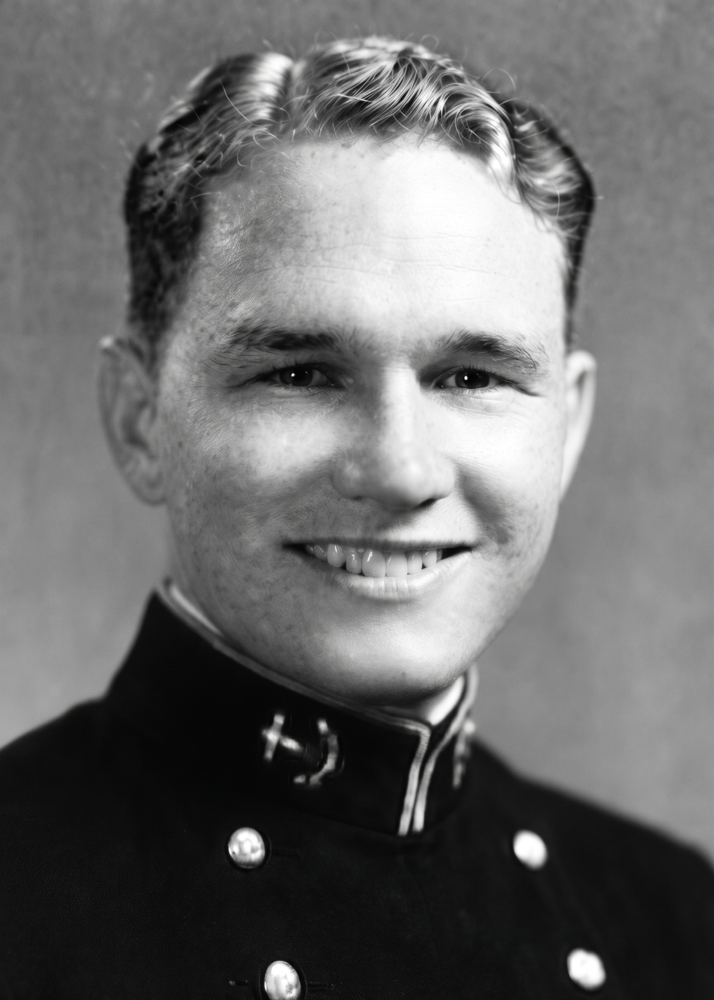
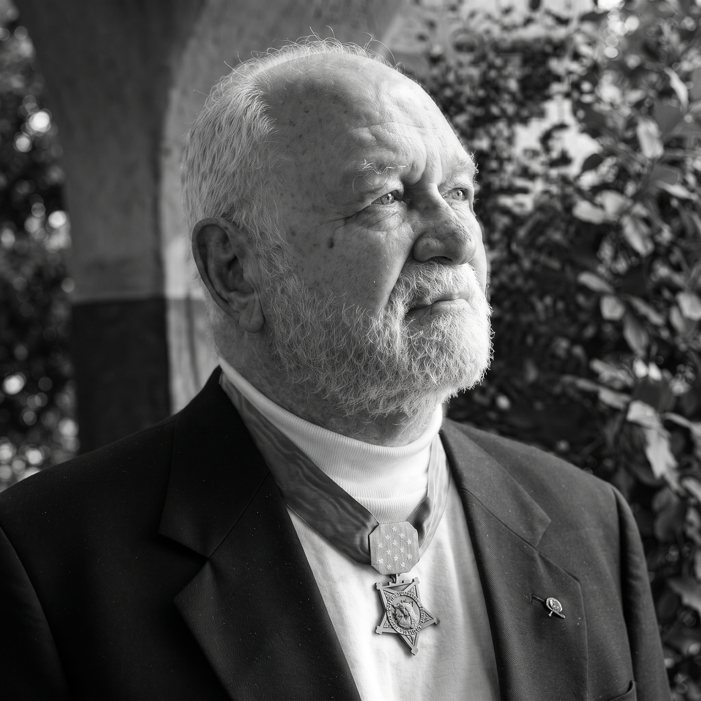
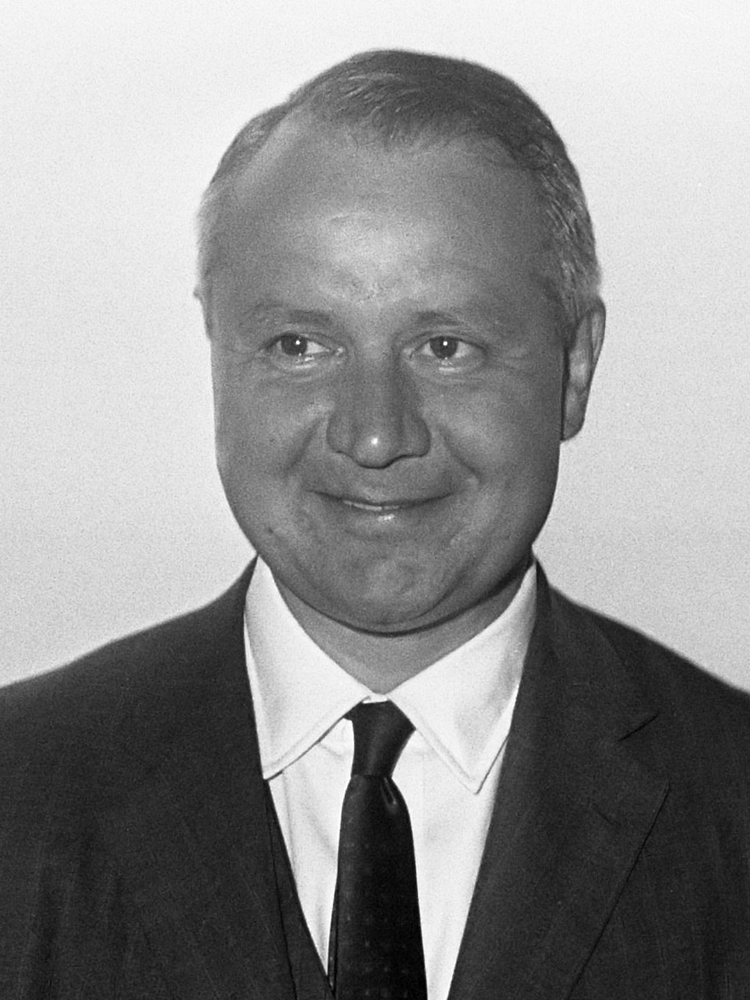
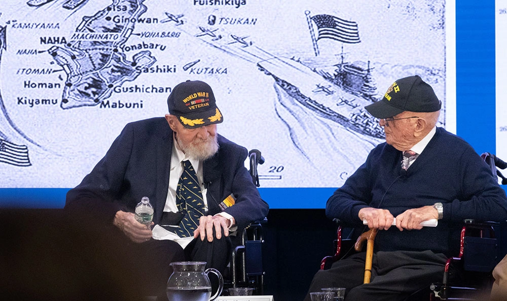
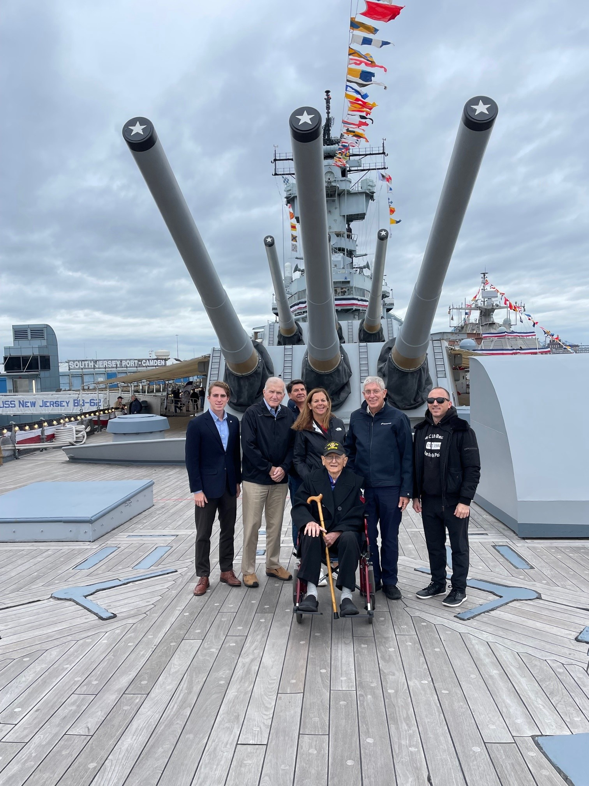

These three men never set foot on LCS-102. They served on her sister ships, part of the same fleet of 130. But she's the only one left whole, so she carries their memory now, along with everyone else who served.


Lieutenant Richard M. McCool Jr. commanded LCS-122, a sister ship of LCS-102. On June 10, 1945, north of Okinawa, he helped rescue the crew of a sinking destroyer. The next day a kamikaze aircraft struck his own ship, and he led the firefighting and rescue work. He kept going despite his wounds and burns, and he received the Medal of Honor.


J. William Middendorf II served as engineer officer and navigator on LCS-53, a sister ship of LCS-102. He joined her at the very end of the war, during occupation duty in China, and he later became the 62nd Secretary of the Navy. In November 2024 the Navy identified him and Eddie Desmond as the last two surviving LCS sailors. He died on October 24, 2025, at the age of 101.

Eddie Desmond was born on November 10, 1925. He was the cook on LCS-128, a sister ship of LCS-102, and his battle station was a 20-millimeter anti-aircraft gun. His ship served at Okinawa and in the Philippines. In 2021 he helped lay a memorial wreath from the deck of LCS-102. As of September 2, 2026, available public records identify Eddie Desmond as the last known surviving LCS sailor.